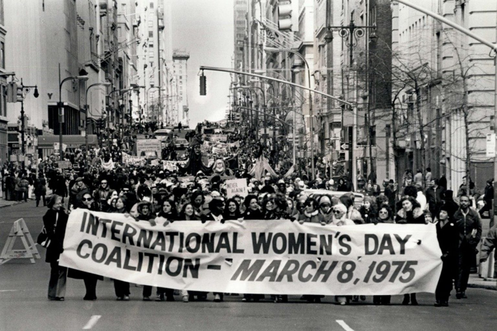

History of Women's Day
How Did It Start?
International Women's Day has been observed since the early 1900's. It first started when unrest and debate were occuring among women. Oppression and inequality with terrible working conditions in 1908 led to campaigning for change. 15,000 women marched through New York City demanding shorter hours, better pay, and voting rights. In 1909, the Socialist Party of America designated February 28 as National Women's Day in honor of this march. In 1910, Clara Zetkin pitched the idea of an International Women's Day in Copenhagen to over 100 women from 17 countries. Many European countries like Austria, Denmark, Germany and Switzerland celebrated this day on March 19 with over 1 million women attending.
An Overview of the Timeline
- 1908
- Inequality and oppression leading to a march of 15,000 women advocating for their rights.
- 1909
- First Women's Day declared by Socialist Party of America. Only a national event though.
- 1910
- The idea of a Women's Day was pitched by Clara Zetkin in Copenhagen. The Idea got unanimous approval.
- 1913-1914
- On the eve of World War 1, campaigning for peace, Russian Women has their first Women's Day. After discussions, it was decided to be held on March 8.
- 1917
- Russian Women went on strike for "Bread and Peace" which led to women gaining the right to vote.
- 1975
- International Women's Day recognized by the UN.